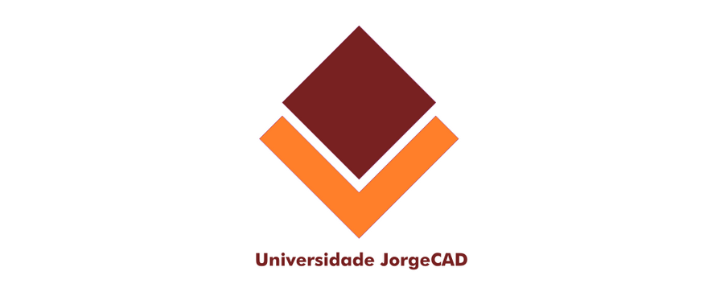
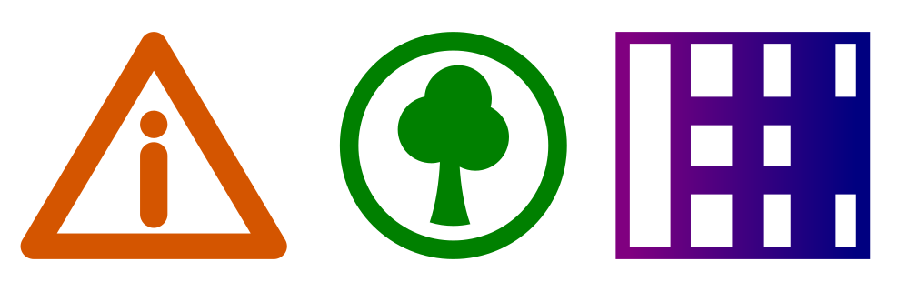

Desenhando uma logomarca
Agora desenharemos uma logomarca, lembrando que se fôssemos iniciar do zero, todas as etapas citadas no início do capítulo deveriam ser levadas em consideração como buscar referências, testar variações etc.
Neste trabalho faremos algo ainda mais simples. Observe a imagem abaixo e tente seguir o passo-a-passo.
1. Desenhe um retângulo de 80x80.
2. Escolha uma cor de preenchimento e retire o contorno.
3. Desenhe um retângulo de 100x100.
4. Escolha uma cor de preenchimento e retire o contorno.
5. Utilizando a tecla control, rotacione ambos os retângulos 45°.
6. Crie uma cópia do retângulo menor.
7. Posicione a cópia sobre o retângulo maior encaixando-a no topo usando os snaps, e apare (subtraia).
O objeto a ser aparado deve sempre estar por baixo, para controlar a ordem de posição use as teclas Home, End, PageUp e PageDown.
8. Agora encaixe o retângulo menor no maior e mova um pouco para cima utilizando a tecla control.
9. Pegue a ferramenta texto.
10. Na barra de propriedade configure como Futura MD BT estilo Bold, tamanho 40, alinhamento centralizado.
11. Digite Universidade JorgeCAD.
12. Pegue a ferramenta seleção e posicione o texto abaixo do logo.
Não se preocupe se se atrapalhar um pouco com textos, ainda teremos um capítulo especialmente para trabalhar com tipografia neste curso.

Neste desafio você terá de criar dois ícones e um logo. Colocará em prática o que já aprendeu sobre operações booleanas, gradientes e estilos de preenchimento e contorno. Observe os desenhos abaixo e tente reproduzi-los no Inkscape.
Salve o arquivo como Glifos.svg.

Em alguns casos você terá de usar intersecção, o que já vimos anteriormente, o atalho para intersecção é
Ctrl+*.
Se tiver dificuldades com este exercício, solicite o auxílio de seu instrutor.